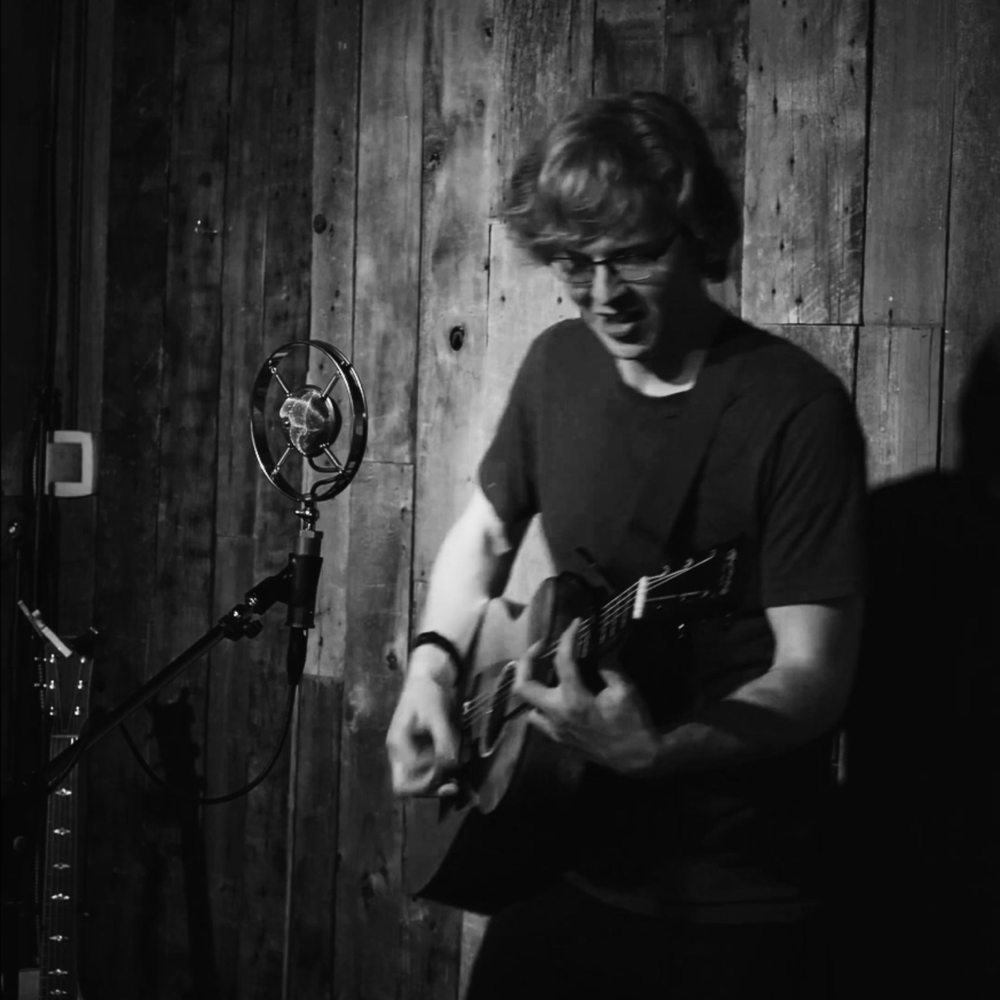

“I love music and music loves me. I can’t help but play the guitar and write songs.”
Havre De Grace is the musical alias of singer-songwriter Stefan Auvache Bradley.
Stefan was raised on an eclectic mix of music, ranging from Led Zeppelin, REO Speedwagon, and Heart to Michael Jackson and Donny Osmond. As he grew up and branched out into his own musical discoveries, he fell in love with the music of Bob Dylan, Jack White, John Mayer, and Kristian Matsson’s Tallest Man on Earth. All of these influences have shaped him as a guitar player, a songwriter, and a person.
His first album, I Want to Be Yours and Other Songs, was originally released under the moniker Stefan Auvache in July 2025. His second album, Into the Wild, was released in July 2026.

A new record comes out every year on his birthday, June 6. There is no AI anywhere in the music: every song is written, played and sung by a person.